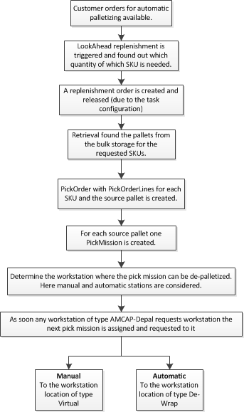
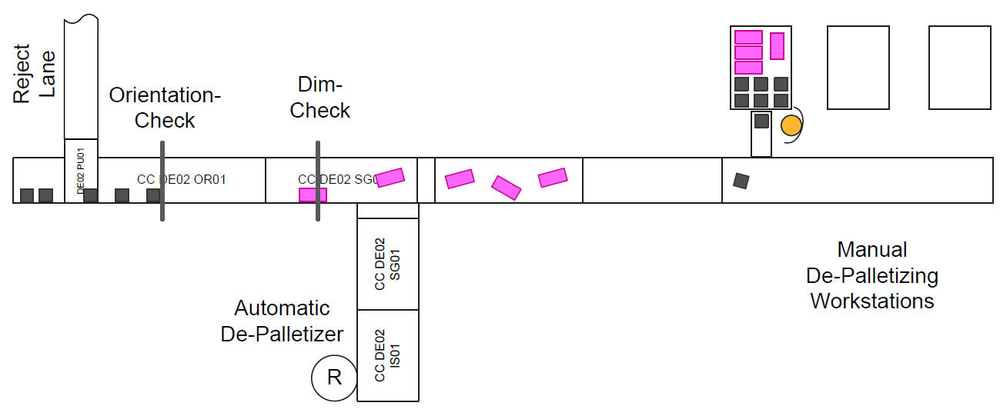

|
|
|
|
")

|

|
|
De-Palletizing is the process where products are transferred from a pallet to a conveyor to produce a flow of singulated trackable uniquely identified items.
The De-Palletizing in ACMAP scope is used for fill the Multishuttle Buffer. It uses the standard Lookahead Replenishment for trigger this process.
In AMCAP scenario it is tried to use the automatic de-palletizing. But in in some case it is not possible to de-palletize products automatically. For example the first layer is not complete, or the product is generally not suitable for automatic de-palletizing. Such decisions has to be made during the teach-in phase. As soon a product was qualified for automatic de-palletizing and the first layer is complete the system will initiate automatic de-palletizing otherwise manual de-palletizing has to use.
|
|
|
|
The de-palletizing in DCD is part of PIC and use the standard PIC entities like PickMissions and Picks. Thereby each PickMission represents one source load unit (pallet) and for each SKU on it one pick with the quantity is created. The basic decision between automatic and manual de-palletizing is made during the creation of the pick missions. Thereby following checks are performed:
After the workstation with the type "AMCAP Depal" or "Manual Depal" is found the PickMission (e.g. the source pallet) is assigned to it and requested to the workstation.
On arrival at the requested workstation location of type De-Wrap (only for automatic de-palletizers) the first step is to check and dewrap of requested
layers. Also here there are differences of automatic and manual de-palletizers. In case of a automatic de-palletizer the pallets arrives at a location,
which is before the actual de-palletizing location. This is the previously mentioned workstation location of type "De-Wrap". Here the operator has to check
the pallet, whether it can be de-palletized automatically or not. He/she has the possibility directly start the automatic de-palletizing process or send the
pallet to the clarification station for further checks or send it to a manual de-palletizing station. Also a reroute, e.g. try to find another automatic
workstation can be triggered at this position. If during reroute no another automatic de-palletizer can be found, the pallet is send back to the bulk
storage.
For the de-wrap dialog description see:
De-Wrap dialog.
On the other hand the arrival at a manual de-palletizing station has to be confirmed manually (via FLS) or automatic (via MFC) on a one of the
workstation locations of type "Source". Because the decision on which of the available source locations the pallet is to de-palletized as next is by the
operator (or an underlying system like MFC), the workstation locations of type "Virtual" and of type "Source" must be in the same group.
As soon the pallet is booked on one of the available source locations, the further processing is done by the
Manual De-Palletizing Dialog.
This overview described generally the process from replenishment to start of de-palletizing:

|
|
|
|
The decision between automatic and manual de-palletizer is made at pick mission creation. Thereby the service qualifier of the pick mission is set to "Amcap Depal" or to "Manual Depal". Afterwards it is clear on which type of workstation a pick mission is to process.
There are 3 positions where the concrete workstation for a pick mission is determined.
Thereby all available and release pick missions are considered, which have no assignment to a workstation yet. Here the assignment is only the setting of the pick mission attribute "lastAssignedTerminal", where the ID of the workstation is saved. The actual assignment, where the pick mission is put into the queue of the workstation is done later.
The determination starts with following parameters:
From the given pick missions and depalletizer stations (workstations) such assignment is chosen, which fits best. This is done as follow:
|
INFO |
This is a general algorithm and can be easily overwritten by projects. |
|
|
|
|
Following demons are used for the de-palletizing process.
|
Demon / Cronjob |
Description | Configuation | ||
|---|---|---|---|---|
|
LookAheadReplenishmentDemon |
This is actually a standard lookahead demon and not part of de-palletizing. But this is mentioned here, because this is the first step to start
de-palletizing. This demon looks at the demand of the orders with service qualifier "RapidPal" (in AMCAP scope), which is not yet available in the
Multishuttle buffer and create a replenishment order for the missing demand. The new created replenishment orders have the service qualifier "Amcap Depal" and later it is changed to "Manual Depal" if the pallet cannot be de-palletized manually. Because the order can have many pallets in it, changing the service qualifier is not possible at this stage. Thus changing service qualifier is only on the level of the pick missions. |
See Replenishment for details. | ||
|
AssignPickMissionsToDepalletizersDemonDepal |
The assignment of pick missions to de-palletizers is normally done during the pick missions are released. In some cases this assignment cannot be done, e.g. if no de-palletizing workstations are available. This demon triggers the assignment of such pick missions to de-palletizers, which are already released but the attribute "lastAssignedTerminal" is not yet filled.
|
The primary key of the pick zone configuration must be provided. This is the configuration of the zone, where de-palletizing is to perform. |
||
|
SendToDepalletizerDemon |
This demon should be only used for test purpose. In the production installation there is no need for this demon. This demon looks at the workstation location of type "De-Wrap" and send all pallets which are booked at this location to the location of type "source", where the de-palletizing for this pallet starts. |
For each workstation, one instance of this demon is needed. The workstation primary key is to provide in the configuration. |
||
|
DepalAggregationCronjob |
This cronjob is not defined in de-palletizing module and using the standard AggregationCronjob. It is mentioned here to give an overview about the aggregations configuration used by de-palletizing. Following aggregation configurations are available:
|
|||
|
DepalPurgerCronjob |
This cronjob is not defined in de-palletizing module and using the standard PurgerCronjob. This is used to remove the older entries created by the de-palletizer module. These are generally only some facts. |
There are not events thrown by the de-palletizer module (events which are only between background and ui are not mentioned here).
In Following such events are listed, which are handled by the de-palletizer module:
|
Event |
Description |
|---|---|
|
WorkstationReleasedEvent |
Only setting the status of the manual de-palletizing stations status. This is only for internally usage. |
|
WorkstationLockedEvent |
As soon a workstation is locked, the pallets are rerouted to another available de-palletizers. |
|
PickOrderLineCanceledEvent |
Only necessary on manual de-palletizing stations. If all lines are cancelled and the pick order is finished and the source pallet is not empty, then it stores the pallet in the bulk storage. |
|
WorkstationFeedQueueEvent |
Looks for pick missions where the lastAssignedTerminal is equal to the workstation id for which this feed event was thrown. Such pick missions are put into the free queue entries of the workstation. |
| TransportConfirmedEvent | During automatic de-palletizing the number of upcoming packages are announced in advance. In the case there are more packages as announced such packages are transported to the clarification location with a specific clarification code. Such packages are removed automatically using this event. |
| RequestDonorEvent |
For workstations with type "Amcap Depal" and "Manual Depal" the source pallets of the assigned pick missions are requested. For automatic de-palletizing to the "De-Wap" location. For manual de-palletizing to the "Virtual" location. |
|
|
|
|
Following Facts are written by the de-palletizer module:
| Fact | Description |
|---|---|
|
DepalDurationFact |
On confirmation of a pick this fact is written thereby following values are persisted:
|
|
DepalThroughputFact |
This is also written at pick confirmation and contains information about the number of pallets, number of layers and number of items de-palletized.
|
|
DepalAvailabilityFact |
On status change the new status is written. Status of the workstation and for automatic de-palletizers the status of the robot and stripper plate.
|
| DepalSKUProblemFact |
Only for automatic de-palletizers. This is written with the confirmation from the de-palletizer with an error.
|
| DepalBarcodeErrorFact |
For each no read of the barcode at the manual de-palletizer one entry is written.
|
| DepalLayerDurationFact |
At pick confirmation the duration of each layer is written.
|
|
|
|
|
Following alarms can be raised:
|
Alarm |
ID | Description |
|---|---|---|
|
DepalletizerAssignmentAlarm |
PIC_AMC_0001 |
Alarm which is thrown when no manual de-palletizing station could be assigned. |
Following exceptions can be thrown:
|
Exception |
ID | Thrown when ... | Handling |
|---|---|---|---|
|
DepalletizerAssignmentException |
PIC-AMC-0001 |
A pick mission could not be assigned to any de-palletizer while sending the pallet from a de-wrap station to a manual de-palletizer. |
Check that at least one manual de-palletizing workstation is available and configured. |
| DeWrapNotConfigureException | PIC-AMC-0002 |
When the de-wrap configuration is not available. |
Check the configuration. How the configuration is to provide is described in ControlData: DEWRAP. |
| LayerLUTypeNotConfigException | PIC-AMC-0003 |
For the source pallet load unit type no mapping to the layer load unit type exists. The layer load unit type is necessary to find the SKULUCapacity data for it. |
Check the configuration. How the configuration is to provide is described in ControlData: LUT. |
| NoWorkstationFoundException | PIC-AMC-0006 | Not in use | |
| SKULUCapacityNotConfigException | PIC-AMC-0004 | For the layer no SKULUCapacity is configured. | Check the SKULUCapacities for the current SKU quantity unit. If for the layer load unit type no configuration exists, add it. |
| WrongWorkstationTypeException | PIC-AMC-0005 | Pallet with the pick mission service qualifier "Amcap Depal" arrives at manual de-palletizer or with service qualifier "Manual Depal" arrives at automatic de-palletizer. | Check the workstation types and correct these. |
| NoManualDepalLocationFoundException | PIC-MANUAL-DEPAL-0002 | For the scanned location alias in the manual de-palletizing dialog no location can be found. | Check and update the location alias configured for the source locations of the manual de-palletizing stations. |
| WrongSkuQuantityUnitException | PIC-MANUAL-DEPAL-0001 | Not in use |
|
|
|
|
As described above the decision, whether a pallet can be de-palletized automatically or manually is made during release of the order. And in the case of automatic de-palletizing the pallets are send to a location in front of the de-palletizer, where the de-wrap process is performed. Afterwards the pallet is ready for automatic de-palletizing.
The communication with the underlying de-palletizing system is via DCI telegrams, which can be tracked with in the Message Manager dialog of DCD. For a general overview these telegrams are described here briefly:
|
Telegram |
Direction | Description |
|---|---|---|
| DEMI | DCD -> Depal |
This is a "De-Palletizer Mission" and used to start a de-palletizing process. All information necessary for a de-palletizing, e.g. the height of the pallet, the layers to pick, the pick program to use, and many other information are provided within this telegram to the de-palletizer. |
|
DELL |
Depal -> DCD |
The "De-Palletizer Layer Left" telegram is send from the de-palletizer as soon a layer is picked and the robot moves from the pallet to the destination, where to drop this layer (stripper plate). |
|
DENO |
Depal -> DCD |
The "De-Palletizer Notification" telegram is send as soon the de-palletizer has dropped the layer on the destination (stripper plate). |
| DERP | Depal -> DCD | Each DEMI is completed with a DERP, which is the "De-Palletizer Response". Within this telegram also errors during de-palletizing are send. |
For some details see also the De-Palletizing Mission Dialog.
The communication to and from de-palletizer is completely encapsulate in MFC. The interaction with an overlying system (like LMS) is throw some specific interfaces "DepalletizerInitiator" and "DepalletizerExecutor".
|
|
|
|
Here a briefly overview about the process is given. For details see: Manual De-Palletizing Dialog.

The pallets for manual de-palletizing are transported to a virtual location of the workstation. With the booking at a concrete source location the dialog can start the de-palletizing process. Thereby depended on the configuration one to many source locations can be used.
|
INFO |
Because of dialog layout 5 locations can be visible. If more than 5 locations are configured, the dialog layout has to be adjusted. |
After de-wrapping and other pre-checks on the pallet the actual de-palletizing process is started. Thereby for each item following procedure is used:
The communication with the barcode scanner is also with DCI. Here a short description of the telegrams:
|
Telegram |
Direction | Description |
|---|---|---|
|
BARP |
Scanner -> DCD |
This "Barcode Response" is send with an unique location of the current workstation and up to 5 barcodes. The location is fixed within the scanner and not changeable. |
The current position of the cart can be determined within the dialog. Therefore two DCI telegrams are used:
|
Telegram |
Direction | Description |
|---|---|---|
|
STRP |
Dialog -> PLC |
Ask PLC about the current position. As deviceId the front position of the workstation is used, e.g. the work location. |
|
STPO |
PLC -> Dialog | This is the response on STRP and contains for the given deviceId the current position in mm. |
The returned position is used for determine the actual source location of the cart. For the position range configuration see: pic-manualdepal.xml
|
|
|
|
This function can be used to de-palletize a pallet partially. For example if a pallet has many layers and de-wrapping of all layers at once can cause the fall of the items, the operator at the De-Wrap station can select how many layers are de-wrapped in one process. If not the complete number of layers are entered, which are actually to de-palletized, the pallet is send back to the de-wrap location of the current workstation for the next round.
This function can be parameterized for each workstation in the De-Palletizing Station dialog.
|
|
|
|
In periods where the workload for a de-palletizer is low, it is possible to do preventive calibration. For this purpose, pallets with new products can be brought to the de-palletizer for calibration of the picking program.
The operator at the de-wrap station is informed, that the current pallet is for preventive calibration, that he/she de-wrap only the first layer. After the calibration the pallet returns to the de-wrap location, where the operator is requested to wrap the pallet. Afterwards the pallet is stored into the bulk area.
The preventive calibration starts only, if following fulfills:
|
INFO |
The exact determination is to adjust by project and therefore project specific. The Palletizing Quantity Unit Dialog provides a general function to start preventive calibration. In this general solution more than needed pallets are considered. |
See also: Determining the De-Palletizing Programm
|
|
|
|
Following dialogs are involved in this process:
|
Dialog |
Description |
|---|---|
| De-Palletizer Station |
Additional configuration for de-palletizer workstations are done within this dialog. |
|
The de-wrap process before a pallet can be de-palletized automatically in supported on a de-wrap station, where this dialog provides the functionality for this process. |
|
|
This dialog provides the complete functionality for manual de-palletizing workstations. |
|
| De-Palletizer Mission | The communication with the automatic de-palletizer in tracked in this dialog. Because the telegrams are deleted after the de-palletizing process is complete, this dialog shows only the current active or available missions for the de-palletizer (DEMIs). |
|
INFO |
Beside these specific dialog many other standard dialogs are used for tracking and information process. For example the message manager dialog, pick mission dialog, the palletizing quantity unit dialog, cron job dialog, alarm monitor, etc. |